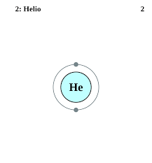
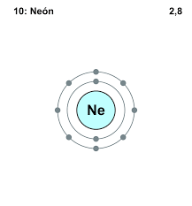
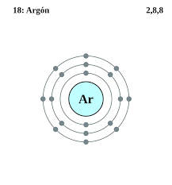
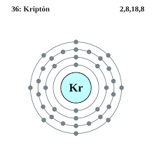
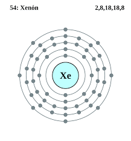
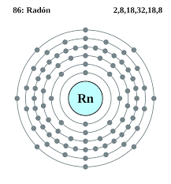
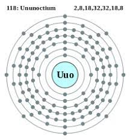

Los gases nobles son un grupo de elementos químicos con propiedades muy similares: por ejemplo, bajo condiciones normales, son gases monoatómicos inodoros, incoloros y presentan una reactividad química muy baja. Se sitúan en el grupo 18 de la tabla periódica.
El helio es el elemento químico de número atómico 2, símbolo He y peso atómico estándar de 4,002602. Pertenece al grupo 18 de la tabla periódica de los elementos, ya que al tener el nivel de energía completo presenta las propiedades de un gas noble.
Masa atómica: 4,002602 u
Número atómico: 2
Configuración electrónica: 1s²
Electrones por nivel: 2
Punto de ebullición: -268,9 °C
Descubridores: Pierre Janssen, William Ramsay, Norman Lockyer, Per Teodor Cleve
Traducción del inglés-El neón es un elemento químico de símbolo Ne y número atómico 10. Es un gas noble. El neón es un gas monoatómico inerte, incoloro e inodoro en condiciones estándar, con aproximadamente dos tercios de la densidad del aire.
Punto de fusión: -248,6 °C
Configuración electrónica: [He] 2s²2p⁶
Número atómico: 10
Masa atómica: 20,1797 u
Electrones por nivel: 2,8
Descubrimiento: 1898
El argón es un elemento químico de número atómico 18 y símbolo Ar. Es el tercero de los gases nobles, incoloro e inerte como ellos, constituye el 0,934 % del aire seco. Su nombre proviene del griego ἀργός [argos], que significa inactivo.
Configuración electrónica: [Ne] 3s²3p⁶
Número atómico: 18
Masa atómica: 39,948 u
Electrones por nivel: 2,8,8
Radio atómico: 71 pm
Punto de ebullición: -185,8 °C
El criptón es un elemento químico con el símbolo Kr y el número atómico 36. Es un gas noble incoloro, inodoro e insípido que se encuentra en pequeñas cantidades en la atmósfera y se usa a menudo con otros gases raros en lámparas fluorescentes. Con raras excepciones, el criptón es químicamente inerte.
Número atómico: 36
Configuración electrónica: [Ar] 3d¹⁰4s²4p⁶
Masa atómica: 83,798 u
Electronegatividad: 3
Electrones por nivel: 2,8,18,8
Descubridores: William Ramsay, Morris Travers
El xenón es un elemento químico de la tabla periódica cuyo símbolo es Xe y su número atómico el 54. Gas noble inodoro, muy pesado, incoloro, el xenón está presente en la atmósfera terrestre solo en trazas y fue parte del primer compuesto de gas noble sintetizado.
Configuración electrónica: [Kr] 4d¹⁰5s²5p⁶
Número atómico: 54
Masa atómica: 131,293 u
Masa atómica: 131,293 u
Descubrimiento: 1898
Electronegatividad: 2,6
El radón es un elemento químico de símbolo Rn y número atómico 86. Es un gas noble radiactivo, incoloro, inodoro e insípido.
Configuración electrónica: [Xe] 4f145d106s26p6
Número atómico: 86
Masa atómica: 222 u
Electrones por nivel: 2,8,18,32,18,8
Descubrimiento: 1900
Descubridor: Friedrich Ernst Dorn
El oganesón es el nombre para el elemento sintético de la tabla periódica cuyo símbolo es Og y su número atómico es 118. Es el elemento más pesado sintetizado hasta ahora y el último del séptimo período en la tabla periódica. En la tabla periódica es un elemento del bloque p y el último del periodo 7.
Número atómico: 118
Descubrimiento: 2002
Masa atómica: 294 u
Número CAS: 54144-19-3
Descubridor: Yuri Oganesián
Serie química: Gases nobles, Elementos del periodo 7
